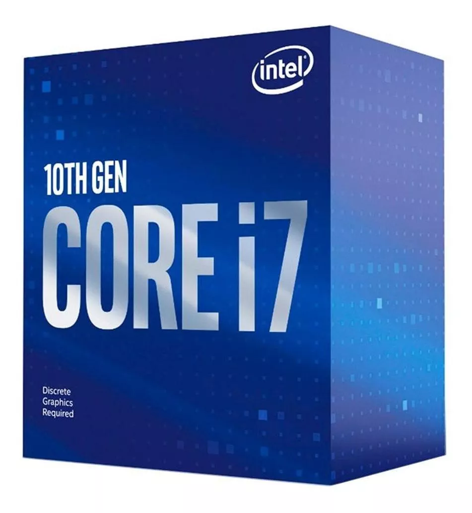
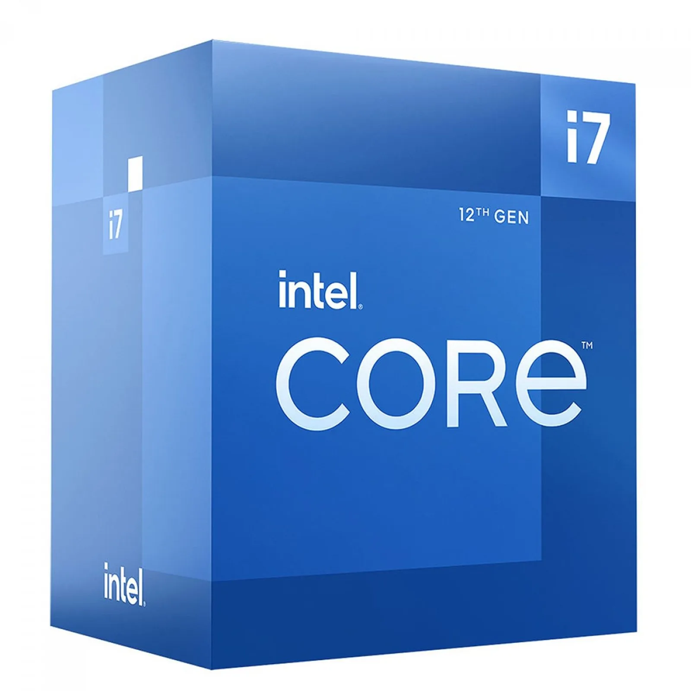

Processador
O processador é a unidade central de processamento de um computador (CPU), que funciona como o cérebro do computador, pois interage e faz as conexões necessárias entre todos os programas instalados. Neste processo, ele também interpreta as informações enviadas pelos programas, realiza diversas operações, inclusive gerando a interface que nós interagimos quando usamos um computador.
Informações sobre o produto
Um processador para jogos, por exemplo, deve ter um grande número de núcleos e threads, pois isso pode garantir maior desempenho, mais agilidade na execução de comandos e melhor processamento de cálculos. Para essa finalidade, é recomendado ter um processador com 6 núcleos no mínimo.
Processador AMD Ryzen 7 5700X,
3.4GHz(4.6GHz Max Turbo), Cache 36MB, AM4,
Sem Vídeo - 100-100000926WOF

À vista: R$ 1.299,00
À prazo: em 10x de R$ 152,00
Processador Intel Core I7-10700f
- Bx8070110700f

À vista: R$ 1.496,00
À prazo: em 12x de R$ 145,00
Processador Intel Core I7 12700 12ª Geração,
4.9GHz Turbo, Cache 25MB, 12 Cores, 20
Threads, LGA 1700 - BX8071512700
